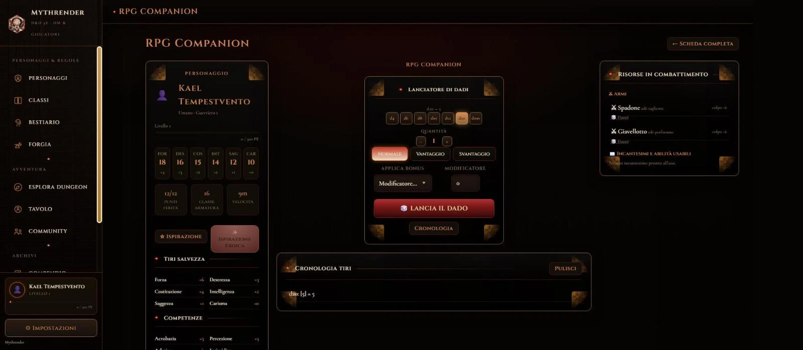
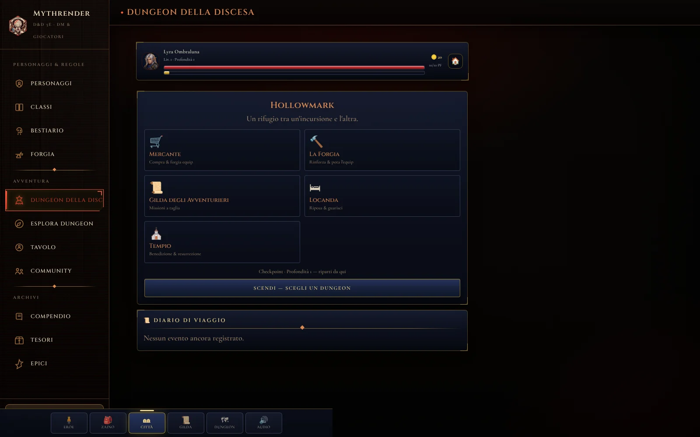
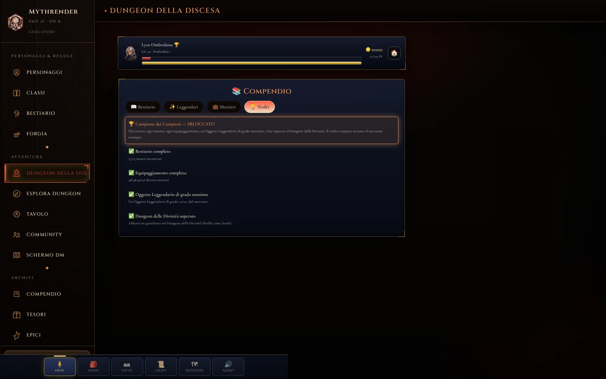

Mythrender
Mythrender
Mythrender è il nuovo nome di RollOne: stesso progetto, stessi progressi, nessuna reinstallazione necessaria — perché abbiamo cambiato nome.
Il tuo tavolo di D&D e Pathfinder, sempre con te
Crea personaggi, lancia i dadi, gestisci le campagne e consulta bestiario e compendio, per D&D 5ª edizione e per Pathfinder 2ª edizione. Tutto in un'unica app, per Windows, macOS, e da telefono e tablet direttamente dal browser.
Disponibile su Windows · macOS · Web (telefono e tablet)

⬇ Gratis, senza pubblicitàNovità
Mythrender si aggiorna da sola: ecco le ultime novità, dalla più recente.
Il trofeo Campione dei Campioni
Trova ogni mostro del bestiario, ogni pezzo di equipaggiamento esistente, un Oggetto Leggendario di grado massimo (10/10) e supera il Dungeon delle Divinità: il trofeo 🏆 compare accanto al tuo nome ovunque nell'app. Una nuova scheda Trofei nel Compendio segue il progresso in tempo reale.
Livello 1000, mestieri e storia dei personaggi
Il tetto di livello è stato spostato da 20 a 1000. Ogni eroe ha ora una sua storia, un mestiere che lavora da solo mentre non giochi, e un Compendio unico per bestiario, leggendari e mestieri. La creazione del personaggio è diventata un percorso guidato in 4 passi.
Enigmi nei dungeon del Dungeon della Discesa
Leve e forzieri sigillati, indovinelli, sequenze da ricordare, teletrasporti ingannevoli e forzieri-mimic: ogni dungeon ora li propone con intensità crescente in base alla profondità. Oltre il livello 17 si sblocca anche un nuovo dungeon, la Torre del Mago Folle, con nuove abilità e talenti.
Il dado 3D mostra sempre il numero vero
L'animazione del lancio ora combacia sempre, al 100%, col risultato scritto: i dadi 3D con fisica realistica restano disponibili come opzione da attivare in Impostazioni, per chi li preferisce comunque.
Nuova identità visiva, ispirata a Diablo IV
Nero profondo, bagliore rosso sangue, bronzo e osso al posto dell'oro caldo: l'intera app, su D&D e Pathfinder, ha una veste grafica più cupa e drammatica.
Schermo del Dungeon Master riorganizzato
Le schede dello Schermo del DM sono ora raggruppate per funzione (Al tavolo, Mondo vivo, Narrazione, Intelligenza Artificiale), più facili da trovare a colpo d'occhio durante la partita.
Un compagno digitale, non l'ennesima app di dadi
Ogni schermata è pensata per restare al tavolo, non per portartene via.
Tutto il personaggio, sempre a portata di tocco
Caratteristiche, tiri salvezza, competenze, privilegi guadagnati livello per livello: la scheda si aggiorna da sola quando sali di livello, senza calcoli a mano.
Esporta la scheda in PDF quando vuoi stamparla o condividerla fuori dall'app.

Allineamento e tratti da roleplay
In creazione scegli l'allineamento del tuo personaggio su due assi (ordine e moralità), con la spiegazione di cosa comporta al tavolo per ciascuno dei nove risultati possibili.
Poi definisci tratto caratteriale, ideale, legame e difetto: scegli un suggerimento standard o scrivi il tuo. Il narratore IA li userà per restare coerente con chi hai creato.

960 mostri, filtrati come li cerchi davvero
Per tipo, taglia, grado di sfida o origine: mostri ufficiali e creazioni homebrew fianco a fianco, ognuno segnalato per quello che è.
Puoi anche crearne di nuovi nella Forgia, per una campagna che ha bisogno di un mostro che non esiste ancora.

960 mostri, 419 incantesimi, zero scuse
Tutto quello che vedi è già nell'app, gratis, senza pubblicità e senza account obbligatorio.
Scarica Mythrender oraLe regole, senza sfogliare i manuali
419 incantesimi, talenti, privilegi, oggetti, background e condizioni: cerca, filtra per livello, scuola o classe, e trova la regola esatta in pochi secondi.

Anche Pathfinder, con parità di funzionalità
Scheda personaggio con caratteristiche, tiri salvezza e statistiche calcolate automaticamente da popolo, classe e livello: la stessa cura riservata a D&D, per chi gioca a Pathfinder 2e (Remaster).
Schermo del Dungeon Master, Forgia, Esplora Dungeon e Tavolo funzionano allo stesso modo su entrambi i sistemi.

173 creature, filtrabili per livello e tratto
Il bestiario Pathfinder cresce release dopo release, verificato su Archives of Nethys: cerca per nome, filtra per livello minimo e massimo o per tratto.
Come nel bestiario D&D, puoi creare nuove creature homebrew nella Forgia.

Dungeon della Discesa: un mini-gioco di ruolo dentro l'app
Forgia un eroe (sei stirpi, sei classi) e scendi in un dungeon a turni con combattimenti a dadi veri: ogni vittoria porta oro, bottino ed esperienza, da spendere a Hollowmark tra Mercante, Forgia, Gilda degli Avventurieri, Locanda e Tempio.
Da questa versione ogni dungeon nasconde anche leve e forzieri sigillati, indovinelli, sequenze da ricordare, teletrasporti ingannevoli e forzieri-mimic, con intensità crescente mano a mano che si scende: oltre il livello 17 si sblocca la Torre del Mago Folle.

Il trofeo Campione dei Campioni
Trova ogni mostro del bestiario, ogni pezzo di equipaggiamento esistente, un Oggetto Leggendario di grado massimo e supera il Dungeon delle Divinità: il trofeo compare accanto al tuo nome ovunque nell'app.
Una nuova scheda Trofei nel Compendio segue il progresso in tempo reale, mostro per mostro e oggetto per oggetto, fino allo sblocco.

Hai domande su Mythrender?
Dai un'occhiata alle domande più frequenti oppure scrivimi direttamente.
Consulta le domande frequentiDomande frequenti
Hai dubbi su come scaricare l'app o come funziona il multiplayer? Trova le risposte alle domande più comuni nella sezione dedicata.
Sì. Mythrender è gratuita, senza pubblicità e senza acquisti in-app, su qualsiasi piattaforma.
No. Le funzioni base funzionano offline, senza account. Continua a leggere nelle FAQ →
Windows, macOS, e anche Android e iOS direttamente dal browser. Continua a leggere nelle FAQ →
Sì, insieme a quelli ufficiali. Continua a leggere nelle FAQ →
Crei o ti unisci a una campagna condivisa: tutti i giocatori vedono gli stessi personaggi, la stessa mappa di battaglia e gli stessi segnalini in tempo reale.
Sì, come file. Continua a leggere nelle FAQ →
Contatti
Mythrender è un progetto indipendente, senza sede fisica: puoi scrivermi in qualsiasi momento via email.